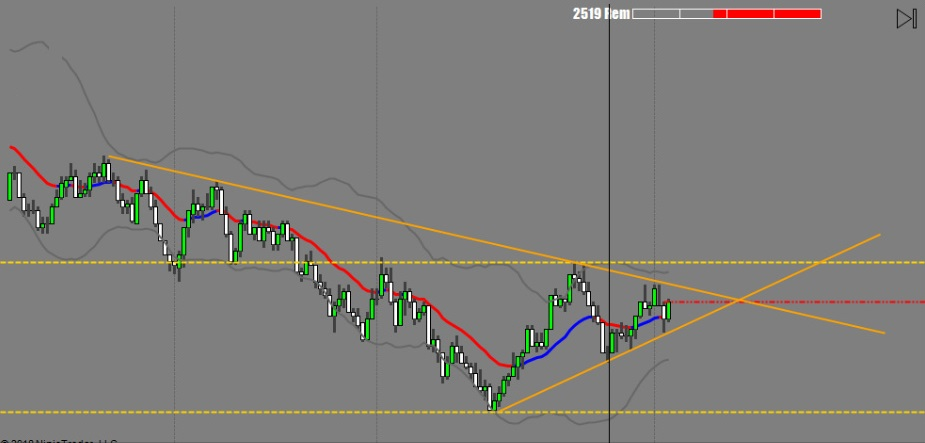
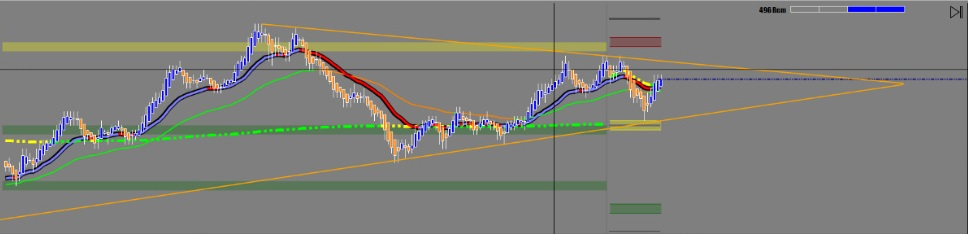

해외선물 - [ZN] 10-Year US Treasury Note futures


ZN은 차트에서 보는것처럼 단기 추세선을 굉장히 잘지키는 독특한 선물이다.
선물에 따라 성격(character)이 있다.
움직임도 다르고 뉴스에 반응하는 모습도 다르다.
ZN은 한 호가에 1,000 Lot 이상 걸려있는 경우가 많아서 일단 방향을 정하면 여간해서는 뒤로 빼지않고 그냥 간다.
때문에 진입할때 마켓오더로 무조건 포지션을 잡아야 한다.
다른 선물처럼 뒤쪽에 넉넉히 주문 넣다가는 매매를 못하는 경우가 많다.
덕분에 손절주문을 짧게 잡을 수가 있어 실패해도 손실이 적지만 Behavior가 마치 할아버지 같아서 정말로 하품이 나는 고리타분한 선물이다.
하지만 인내심 많고 기술적 분석에 뛰어난 전문 트레이더에게는 매매 성공률이 아주 높은 최고의 선물이다.